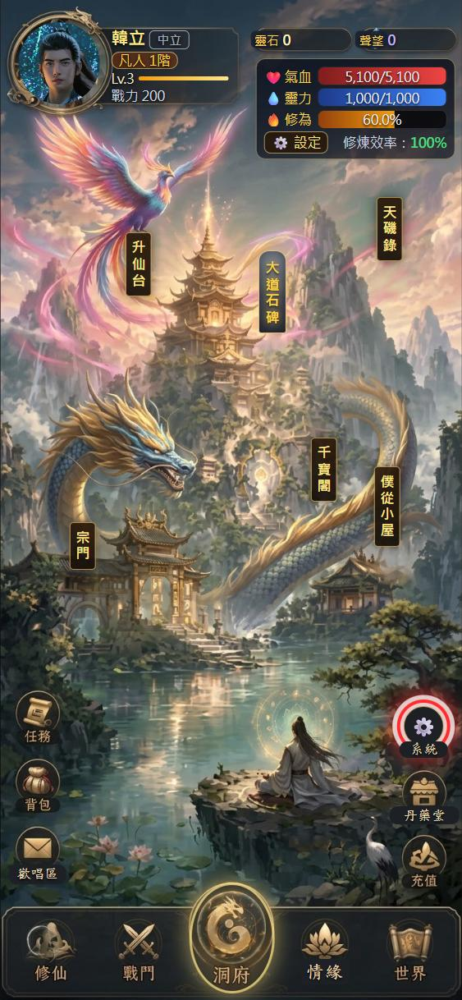
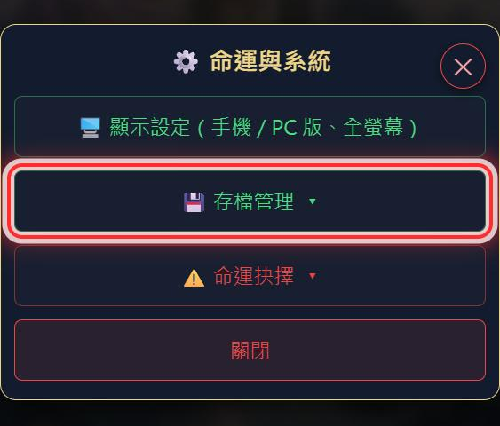
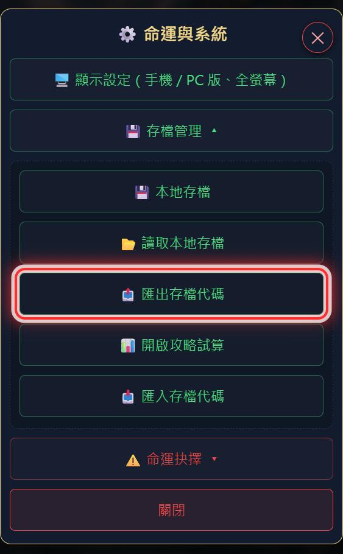
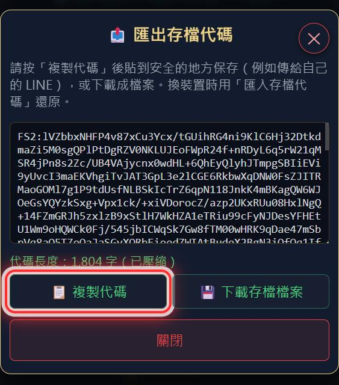

1打開「系統」
在遊戲的洞府畫面，按右下角的「⚙️ 系統」（丹藥堂上方的齒輪）。

2展開「存檔管理」
在「命運與系統」視窗裡按「💾 存檔管理」，下面會展開存檔相關的按鈕。

3按「匯出存檔代碼」
按「📤 匯出存檔代碼」。注意不是「📊 開啟攻略試算」：那個帶出去的代碼沒有驗證碼。

4複製代碼
按「📋 複製代碼」，把整段代碼貼到安全的地方保存（例如傳給自己的 LINE），或按「💾 下載存檔檔案」。這份代碼就帶有驗證碼。
